Suppose you need to draw a line over the blue lines of the layout:
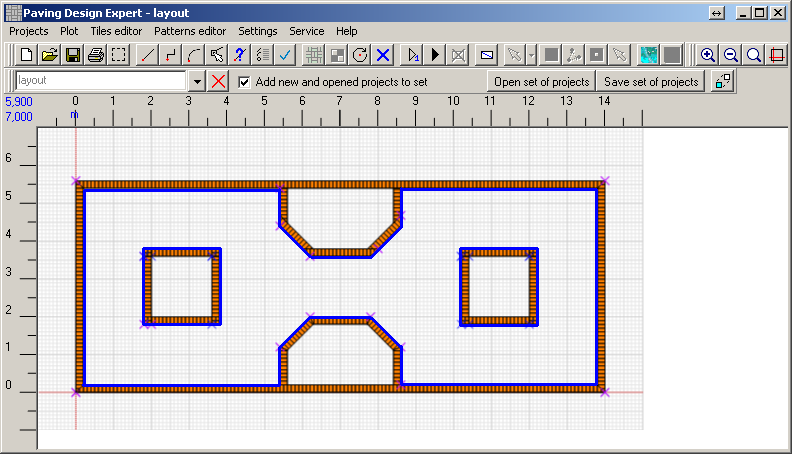
At a small scale it is difficult to get to the reference points by mouse.
If you zoom it the ends of the reference line may be beyond the screen and drawing a line from end
to end will be impossible:
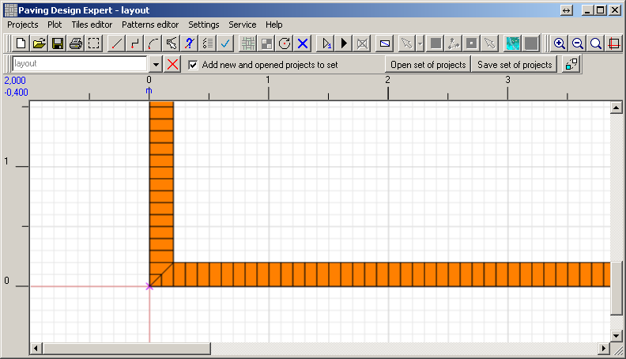
There is a solution - a mini-display. Push the button 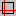 on the toolbar.
A pane with a miniature copy of the working draft will appear on the workspace:
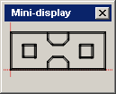
It is important to pre-install the comfortable
size of the drawing.
If the size of the drawing will be too big for the project, the mini-display will be uninformative:
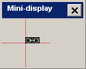
Begin to draw contours. Do not forget to create a new project for the interior space of a working project!
Choose the tool "Polyline" 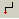. And click the mouse on the mini-display
in the lower left corner (circled in red):
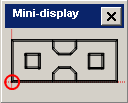
On the workspace you will see a part of the project, corresponding to the clicking point on the mini- display.
Position accuracy depends on the clicking point on the mini-display.
Finally begin to draw the first line. Click at the starting point (on the figure above it is circled
in red). The line will be pulled from this point:
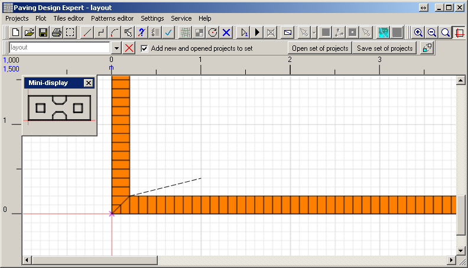
Click on the mini-display at the end of the line:
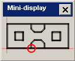
The project will move to this position on the working area:
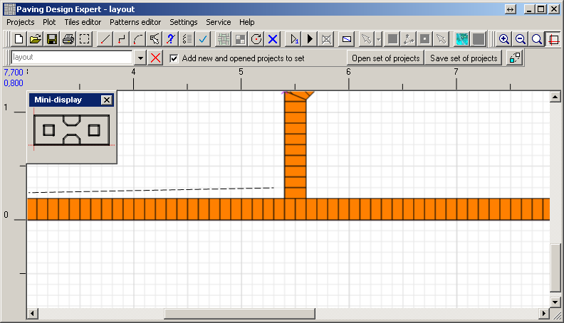
Finish the line. As far as we draw a polyline, a new line begins at that point.
Push the next point on the mini-display:
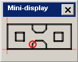
The project has moved to the point we need. We complete the line.
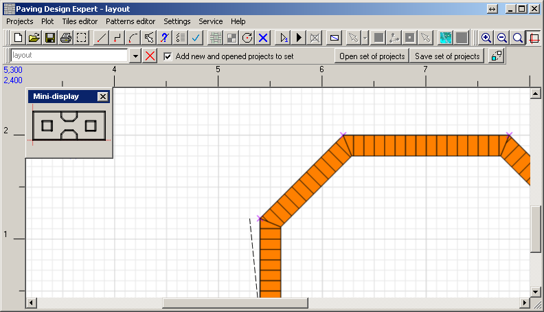
Continue doing the same for each reference point of circuit until finishing.
Mini-display can be dragged to any workspace location, as well as any other window using the title.
You can change its size, as well as any other window by pulling the sides or corners.
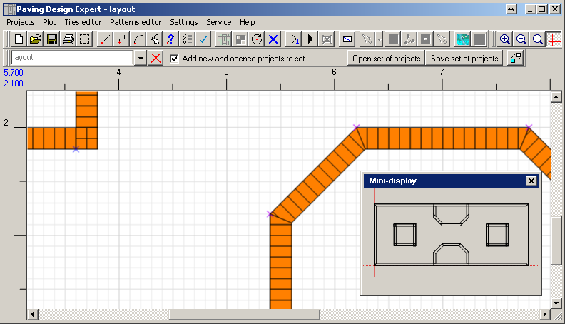